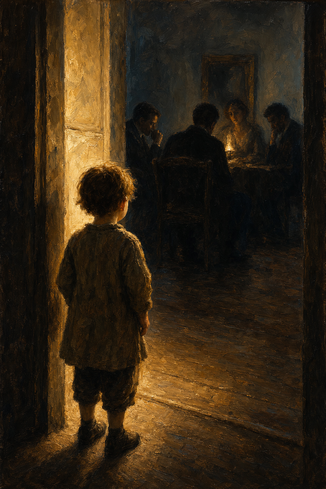
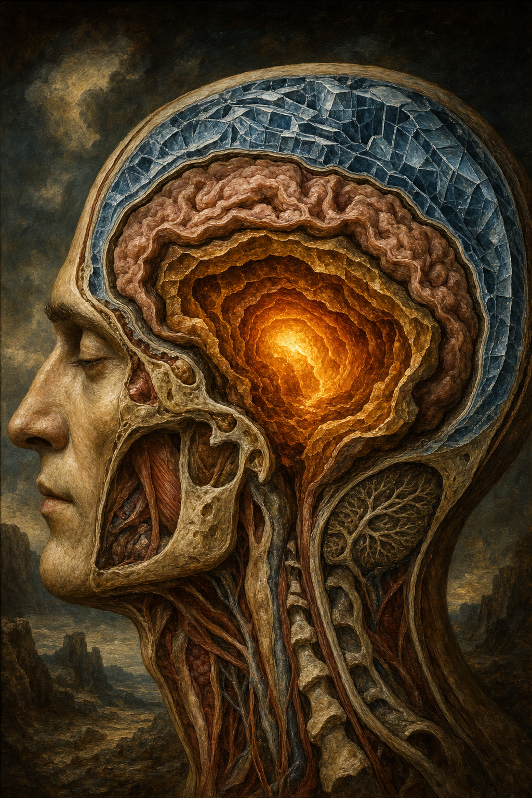
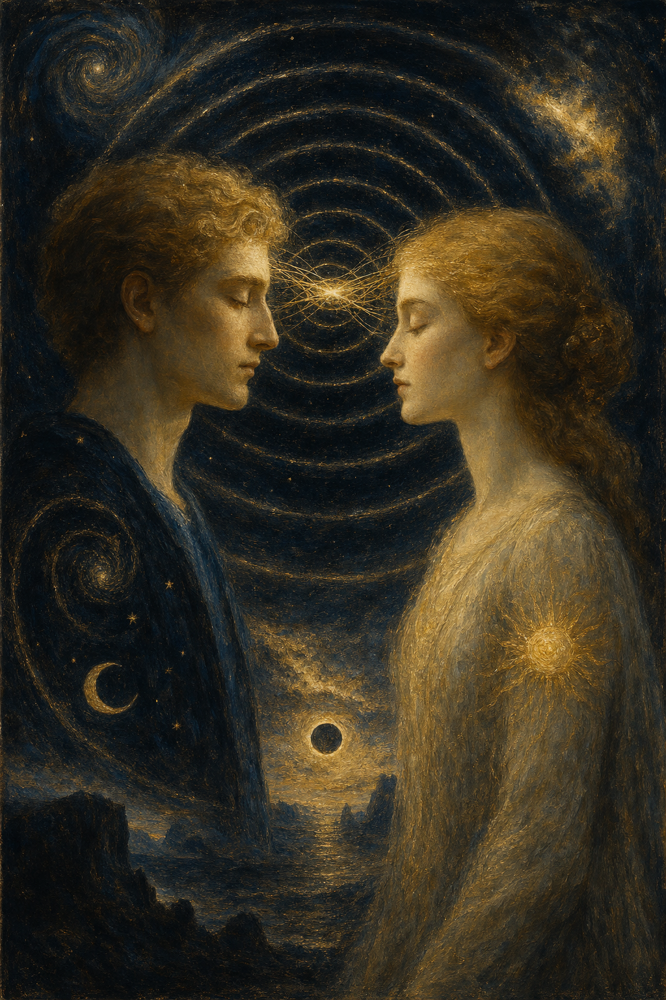
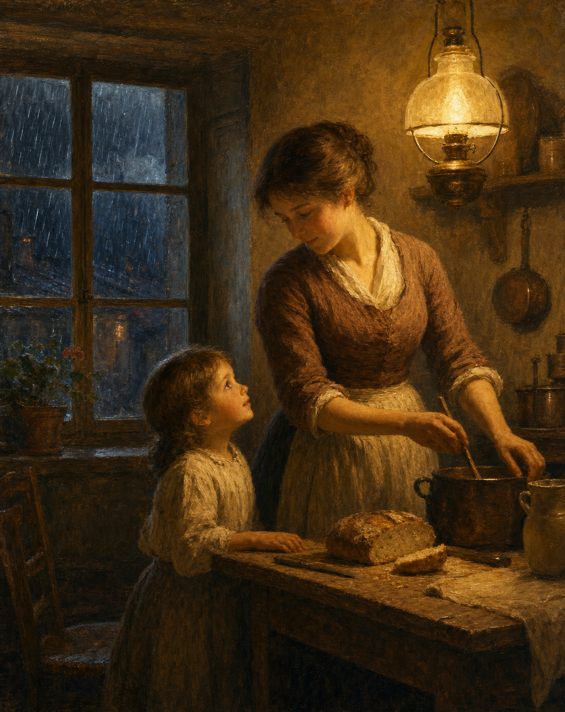
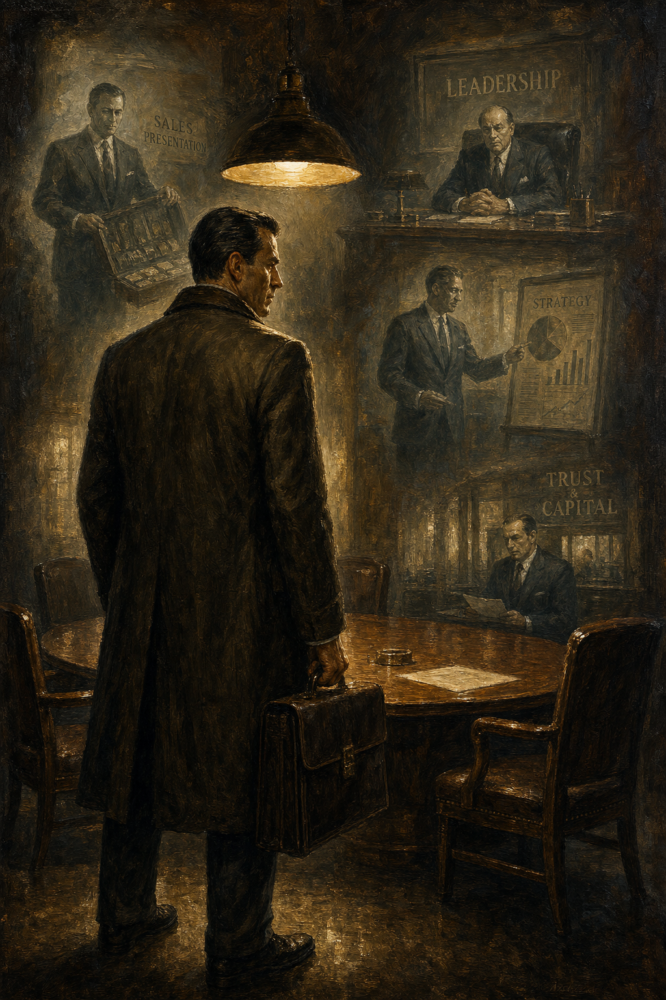

Was Ausgabe 3 sein will
Ausgabe 3 von Open Vizier ist keine Sammlung einzelner Stücke. Es ist ein zusammenhängendes Gedankengebäude, aufgebaut aus Artikeln, Nachschlagewerken, Bildern und Grafiken.
Sie beschreibt ein psychologisches und pädagogisches Modell: das Urgefühl als Grundlage, die drei Gehirnschichten, auf denen es ruht, und was wir in der heutigen Erziehung und Bildung systematisch herausquetschen.
Der Ton ist direkt, ehrlich, undiplomatisch. Wer angreifen will, ist willkommen — das gehört zu Open Vizier.
Die Artikel

Redaktionelle Einleitung

Das Urgefühl

Die sieben Dimensionen

Die drei Gehirnschichten

Kommunikation zwischen Urgefühlen

Was wir Kindern antun

Mama ich habe Hunger
Bildung im KI-Zeitalter
Retrospektive

Das Urgefühl in der Berufspraxis
Nachschlagewerke (Downloads)
Drei vertiefende Nachschlagewerke, die das theoretische Gerüst von Ausgabe 3 bilden. Kostenfrei als Word- oder PDF-Datei herunterladbar.
Denkgrundlage 7D-Gefühlsmodell
Die theoretische Basis: das Urgefühl, das siebendimensionale Gefühlsmodell, die drei Gehirnschichten und sieben offene Forschungsfragen.
Manifest für Bildung und Erziehung
Was die Denkgrundlage bedeutet für die Art, wie wir Kinder erziehen und bilden.
Bildung im KI-Zeitalter
Warum alles, was wir heute lernen, bald nicht mehr zählt — und was wir stattdessen lernen müssen.